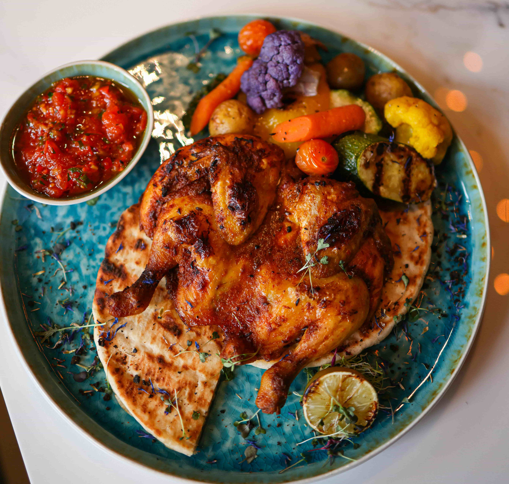

Salsa Chicken

Salsa Chicken is an incredibly easy, dump-and-go main course. Chicken is slow-cooked or baked directly in salsa
and taco seasoning, resulting in tender, flavorful shredded meat perfect for a quick taco night or healthy grain
bowl.
Ingredient
- 1.5 lbs boneless, skinless chicken breasts or thighs
- 1 jar (16 oz) of your favorite salsa
- 1 packet (1 oz) taco or fajita seasoning
Steps
- Combine: Place the chicken breasts or thighs in a slow cooker, oven-safe dish, or casserole dish.
- Season & Sauce: Sprinkle the chicken with the taco/fajita seasoning, then pour the entire jar of salsa over the
top.
- Oven: Cover and bake at 375°F (190°C) for 25-30 minutes.If using Slow Cooker: Cook on Low for 3-4 hours or High for 2-3 hours until the chicken shreds easily.
- Serve: Shred the chicken using two forks and mix it back into the sauce. Serve in tacos, over rice, or on top of a salad.
Homepage